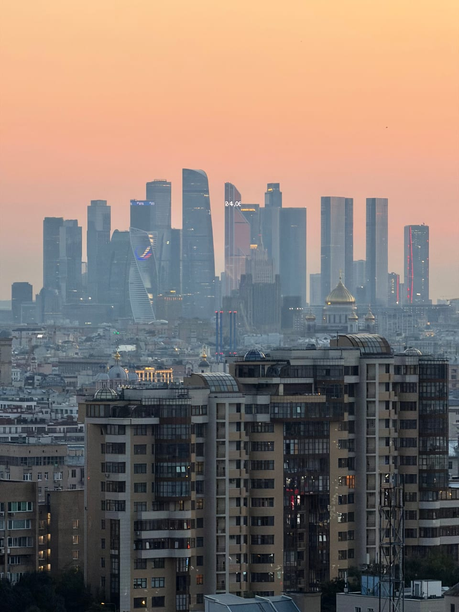

Гид по формату
Подъём на крышу в Москве
Крыши Москвы — это способ увидеть город не с тротуара и не из окна ресторана, а с высоты: Москва-Сити, сталинские высотки, купола, закатный свет и живой воздух над центром.
Какие крыши Москвы подходят для прогулки
Для хорошей прогулки важна не только высота. Нужны понятный проход, спокойная площадка, красивый ракурс и погода, при которой на крыше комфортно находиться. Поэтому конкретные точки подбираются под формат: свидание, экскурсия, фотосессия, закат или небольшая компания.
Что обычно ищут
- вид на Москва-Сити и центр города;
- закатный свет и вечерние огни;
- атмосферные кадры без толпы;
- необычное место для свидания или подарка;
- безопасный маршрут с сопровождающим.
Какие ориентиры видны с разных точек — от Кремля до сталинских высоток, — рассказываем в гиде «Что видно с крыш Москвы». А если вы идёте ради небоскрёбов, загляните в разбор о том, откуда лучше смотреть на Москва-Сити.
Почему не стоит идти на случайную крышу
Самостоятельный подъём на крышу может закончиться конфликтом с охраной, закрытой дверью или небезопасной площадкой. Организованный подъём с сопровождающим спокойнее: заранее понятны время, правила, точка встречи и то, как проходит прогулка.
Каталог
Какие виды есть в каталоге
Локации у метро Фили, Киевская, Курская, Марксистская, Новокузнецкая, Римская, Смоленская, Таганская и Шелепиха. Состав каталога меняется, точный адрес сообщаем после подтверждения записи.
FAQ
Вопросы про крыши Москвы
Можно ли попасть на крыши Москвы безопасно?
Да, если идти с сопровождающим, заранее знать правила поведения и не пытаться искать случайные выходы самостоятельно.
Сколько стоит прогулка по крыше?
Ориентир — от 2000 руб. Актуальная стоимость зависит от формата и показывается в Telegram-боте.
Какие виды можно увидеть?
Чаще всего гости хотят видеть Москва-Сити, центр, высотки, вечерние огни и закат. Конкретный ракурс зависит от доступного маршрута.
Можно ли устроить фотосессию или свидание?
Да. Для этого лучше заранее указать формат в Telegram-боте, чтобы подобрать подходящее время и настроение прогулки.
Москва с высоты